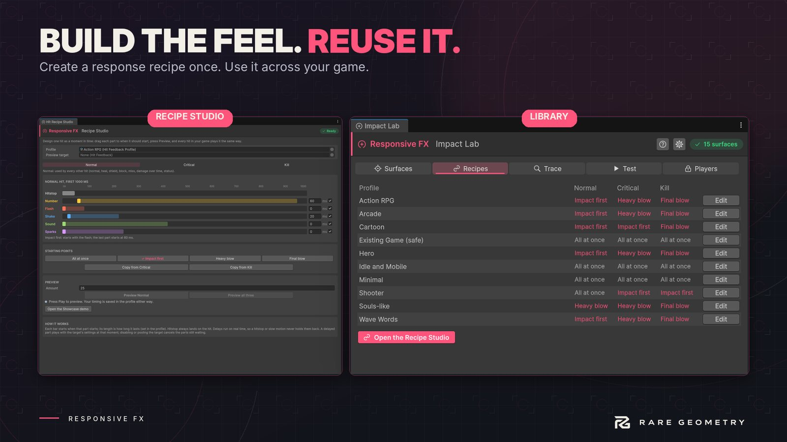

Hit Recipe Studio
A hit is a moment, not a list of effects. Hit Recipe Studio shows one hit reaction as a timeline: you drag each part to when it should start, press Preview, and every hit in your game plays it the same way.


Open it from Tools > Responsive FX > Hit Recipe Studio, from the Hit Recipe Studio button on a Hit Feedback, or from Open in Hit Recipe Studio on a profile.
The window #
- Profile and Preview target: the profile you are designing, and the object that plays the preview. Selecting an object with Hit Feedback in the scene sets both. A target that plays a preset gets a Make a profile button first (presets are shared and can't be changed).
- Normal, Critical, Kill: the three reactions. Kill is used by the killing hit, Critical by critical hits, Normal by every other hit (normal, heal, shield, block, miss, damage over time, status).
- The timeline (the first second after the hit):
- Hitstop always lands on the hit itself; its length comes from the profile's Hitstop settings.
- Number, Flash, Shake, Sound, Sparks: drag a bar, or type milliseconds, to set when that part starts (0 to 500 ms, in 5 ms steps). The pale tail shows how long it lasts (the number's lifetime, the flash duration, the shake, the first sound clip). The tick box switches the part on or off in the profile.
- Starting points: All at once (how most tools play a hit), Impact first, Heavy blow and Final blow, then adjust. The one your timing matches is ticked. Copy from uses another reaction's timing.
- The sample profiles start from a recipe (the presets themselves play everything at once until you choose): Arcade, Action RPG, Hero and Wave Words play Impact first, Heavy blow on criticals and Final blow on kills; Souls-like uses Heavy blow for every hit and Final blow on kills; Cartoon is Impact first with a Final blow; Shooter plays normal hits at once and criticals and kills Impact first; Idle and Mobile, Minimal and Existing Game play everything at once. The Recipes page of Impact Lab shows each profile's recipe by name.
- Preview (Play Mode): plays the reaction on the preview target, or all three a second apart. A preview never changes health, never calls your death code and never removes the target; a kill preview pops it and puts it back.
Every change is saved in the profile asset and can be undone.
Ideas that work #
- Impact first: flash, sound and sparks on the hit, the shake 20 ms later, the number at 60 ms. The number seems to come out of the impact.
- Heavy blow: the same, with the shake at 50 ms and the number at 120 ms. Reads as weight.
- Final blow: for kills, the big number last (about 180 ms), after the burst.
- Keep the flash at 0 for most hits: players read the flash as "it connected".
How it behaves in your game #
- Delays run on real time, so a hitstop or slow motion never holds them back.
- A delayed part plays with the target's settings at that moment (if its renderers changed, it uses the new ones).
- Disabling, pooling or destroying the target drops the parts still waiting, so nothing pops up on a reused enemy.
- On a killing hit, the kill action (disable or destroy) waits until the last part has started.
- No garbage: waiting parts sit in a small fixed list on each target (24 at most; past that a part plays at once).
- All zero (the default for a new profile or a preset) plays everything on the hit, exactly as before.
From code, the timing is three ReactionTiming fields on the profile (normalTiming, criticalTiming, killTiming),
each with number, flash, shake, sound and particles in seconds. HitFeedback.CancelPending() drops the waiting
parts of one target; HitFeedback.PendingParts counts them.